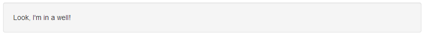
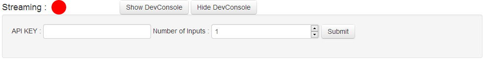
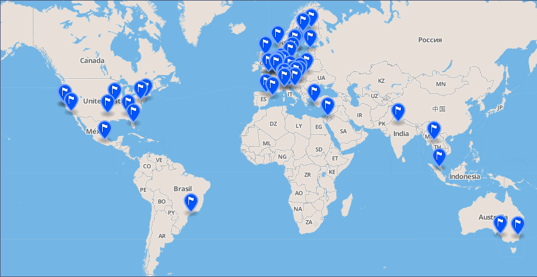
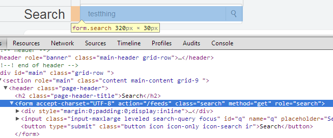
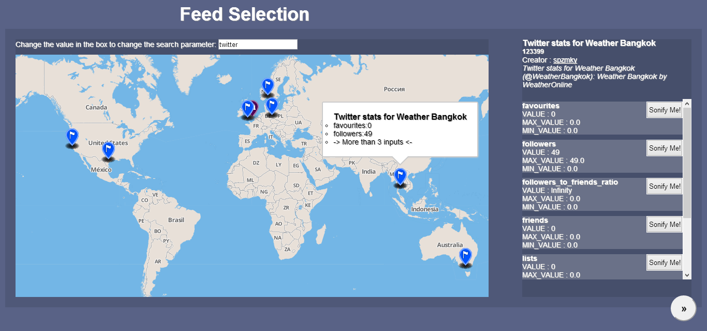

[16]
[16]Making the Cosm
A third year project
[33127405] Alexander M. Roche
Supervised by: Brock Craft
Introduction
The project I chose is an extension of the netChimes project (http://www.netchimes.org) by Jason Geistweidt and Brock Craft, who is also my supervisor. This was a result of being interested in and having already done information sonification at hackdays before. The concept of an Internet of Things is a concept which has long been of interest, and I see this particular implementation very much as an extension of the concept. This project is both relevant to work and my degree program, incorporating important elements of both.
At the moment, the barrier to entry to sending and receiving information on the internet is relatively high; the programmatic structures and API’s are usually only used by people who have the technical skillset to do so. While it is possible to learn how to send information to the cloud, the skillset required to do so oftentimes prevents people doing so. The first half of my project, namely making my own netChime sensor, accomplishes just this by using comparatively ubiquitous and easy to use technologies of a Makey Makey board coupled with a web interface which allows the user to configure what information is sent to the cloud.
The second half of my project is a project with its’ roots firmly in the sonification of data for a purely acoustic effect. Along with extending and contributing to the netChimes project, it will also lower the barrier of entry to usefully using sound that has been produced by the cloud, as it will enable the user to search by keyword (and location based on the result presentation). This part of the project is intended to present a web frontend for the user to search a cloud data server for information according to keywords. Once the search results are returned, the user can select individual feeds along with individual data streams being returned. These streams can then be associated with a particular sound and a trigger specified by the end user. These streams will be sonified by sounds that the user is able to pick and choose at their own will.
In my part-time job, I am a web developer and occasionally work with Physical Computing projects. As a result of this, I am up to date on recent API’s and tools to use to complete most web-based projects. This usually entails creating a front-end, user-directed side of the software and also developing the back end “nitty gritty” of the code to ensure an optimal and functional user experience. Additionally, thanks to the hardware component of my job, I have also learnt to create physical projects and work with some comparatively uncommon tools to reach the desired end. To this end, a project requiring server side scripting along with front-end user interfaces is well suited to my skillset.
In university, the courses that have taught me the most in relation to this project have to be Creative Projects and Perception and Multimedia Computing, along with Networking and Network Programming and Interaction Design. Procedures and Applications of Programming has taught me the basic principles of programming, language independent. Creative Projects has taught me proper project management on a large scale instead of the very “as-soon-as-possible” approach eminent in production level programming. Additionally, it also taught me where to go to look for most answers to problems and how to present a project to a wider audience, taking their needs into consideration to produce a polished project. Perception and Multimedia Computing is relevant as it forces the developer to consider to think outside of the box in terms of accessibility and how the project is perceived on a literal level. This translates into a heightened consideration of what the end users may or may not be able to perceive or make sense of because of various different potential problems. Interaction Design has taught me about the needs of end users, and that the most efficient ways to make your system user friendly is to user test. This is especially significant in my project, as most of the interaction and intent is for the user, necessitating a good design. Networking and Network Programming was able to teach me the fundamentals of how software reacts and interacts with a network, which has helped me to write the back end and interact with the RESTful API’s involved in the project.
Definition of terms
Frontend (Also Clientside)
The frontend of a website is taken to mean the parts of the page that the user can reasonably interact with. In addition, it is also used to refer to code which executes on the local part of the webpage which has been accessed by following a link or typing one in to the browser.
Backend (Also Serverside)
The backend of the website is taken to mean the parts contributing to the webpage which the user does not usually see or have any interaction with, and as such are usually hosted on the server that the website is running on. Included in this would be files the user can download as well as PHP scripts.
DOM
The DOM is an acronym which is short for ‘Document Object Model’, which is a reference to the standards implemented by HTML, XML and XHTML to define how the syntax of the document is structured. A related concept is the DOM tree which refers to how the elements of the HTML, XML or XHTML relate to each other.
Sonification
Sonification is a blanket term, which in this specific case unless specifically stated otherwise is taken to mean the conversion of a set of data into sound by the methodologies of using data to fulfil conditions in which separate sounds are triggered.
Data Object
A data object in the scope of this project refers to anything which contains data relevant to the program. As such, JSON objects, Arrays, and even some strings could be seen to be data objects.
Background Literature[1]
Auditory Displays
The basic of any sonification is to decide what kind of auditory display is going to be provided to the end user, and can be divided into four types : Audification, Speech Synthesis, Sonification and Speech Synthesis.
Sonification, in general, refers to any non-speech audio which can be used to convey information, a popular example of which being the chirp.io project.[2] The reason that sonification can be such a popular method lies therein that humanity possesses a wide faculty of perceptual abilities, not least of which is hearing. As humans are able to perceive volume, pitch, timbre and speed of a sound, it makes sound an ideal addition to any standard visualisations for both entertainment and analytical purposes.
In Audification, a subset of Sonification, the principle is to directly correlate information received by either live-streaming or experimental results to a waveform, which can then be analysed acoustically and is incredibly useful for time-series data as signal processing which can then lead to further analysis being carried out on the data thanks to signal processing techniques.
Earcons are a special kind of auditory display, which are both for the visually impaired and visually abled alike. A pun on the phrase “Icon”, this auditory display is a short audio cue to hint that certain things have happened. As this audio cue is often repeated, it can be ingrained in the memory of the user to the point of instant recognition, and is a feature employed heavily in most modern Operating Systems to indicate system state to the user.
Speech Synthesis is another kind of aid which can be used to aid those hard of sight, but also those will full visual acuity. In its’ simplest form, it is the conversion of data and information to a vocalised sound simulated by a computer which is understandable as speech to a person. To this end, text can be read to a user to create an additional interface to a device.
Sonifying Go[3]
An example of making the physical world sound like something new and different to its’ original sounds, the Sonifying of the game Go by Peter Tigges represents an interesting step. Anybody with enough time and willingness can make a procedural task sound of something as long as enough data points are contributed.
In the case of this game, the sounds were determined procedurally by certain discrete criteria. The pitch and pan of the signal are determined by the distance and direction from the center of the board that the stone is places, with the amount of reverb and amplitude of the signal being determined by the amount of liberties the given stone has. Each colour (read : each player) is allocated a different synth to differentiate between the two players and turns played. The rules of go can be found on Wikipedia[4].
Instead of being an interactive live stream or live feed, this project is generated by inputting all of the pertinent information about the game into the source code manually, which then generates and outputs music. This leads the project to being very static in nature: the only interactive part of creating the music is the playing of the game itself, which even then needs to be tediously recorded.
Sonifying the Higgs Boson[5]
The sonification of the Higgs Boson by the LHC Open Symphony group is one of the most recent productions of a long line of efforts to sonify data from the Large Hadron Collider and its’ physics experiments carried out by CERN.
In this piece, the data from the Higgs Boson experiment is ran through a specific algorithm which associates individual measurements in the data obtained from the experiment to a particular note in the standard western musical notation scale. This transposing follows a principle based in the assumption that patterns in nature often follow those evident in mathematics, and therefore in music equally, as music in western notation is based on mathematical principles.
In later incarnations of the melody, the track has been edited to have different synthesised instruments playing different sections of the derived melody, including a backing section, purely for melodious reasons.
In this sonification, the goal is clear: the intent is to impress the audience and, on a more important level, make science more accessible to the masses. Instead of being presented with a graph and arduously explained to where the Higgs Boson occurs and why it does so, the listener can hear in the melody where the Higgs Boson occurs instead, and learn through hearing.
Sonification of Scientific Data[6]
The process of sonification of scientific data for the purpose of analysis is the main topic of this corpus. The methods of sonification analysed are from a wide range of disciplines including physics, sociology, Speech Communication and Neurology just to name a few.
The main goal of the over-reaching project was to develop a common sonification suite which would enable scientists and sociologists alike to analyze their data in real time with the aid of audio conversions to better visualise and group the information provided.
As the scientific worth and the results from data sonification analysis are not yet well understood, the corpus also urges that further research into the field is a necessity. Additionally, data sonification is not just limited to being useful in the scientific communities, as its’ usefulness in broad analysis in other field such as neurology and sociology is often underrated.
Real-time Sonification of Physiological Data in an artistic performance context[7]
For this particular sonification project, the medium of choice was decided to be a real-time artistic installation involving the human body as a proof of concept run, with emphasis being on as much of an aesthetically pleasing installation as pleasant sonically. The data sampling was carried out using three biosensors to gather the heartbeat, breathing and Thoracic volume expansion during breathing of each participant in the artistic installation.
The data points from this artistic installation were then taken separately and ran through differing conversion processes to translate the raw data to music. This, while also having analytical potential for each stream of data, chiefly was intended to produce sound which the listeners could potentially figure out the original source. Despite the interest in harmonious qualities to the sound, however, there was also heavy emphasis upon keeping the auditory phenomena heavily correlated with the data that was being received and processed from the performers.
To this end, the sound played by the installation has an unintentionally analytical quality; by being closely linked to the data, the sound can be re-analysed, and potentially produce a valid conclusion after passing individual signals through discrete signal processing.
Monitoring Real-Time data streams : A sonification approach[8]
Here, the uses of human perception in sampling and analysing data streams are researched, along with the considerations required to adequately design audio interfaces for human use.
Part of the considerations of the study were the design of auditory displays, with specific interest in understanding the different kinds of auditory perception modes eminent in human perception. The modes boil down to the “Alert”, “Single Track”, “Relational” and “Global” modes. These modes differentiate in both specificity and quantity of data being usefully samples by the listener, with “Alert” and “Single Track” being the most specific; focusing for one particular sound. “Global” mode, on the other hand, is very much an indicator of general state of a system and hence the mode with the least data resolution necessary.
In experiments carried out, the listener was presented with different kinds of audio interfaces, including a spacial interface. This particular interface took advantage of the ability for humans to listen in multiple directions at once in order to pinpoint the location of the source of noise. The main outcome of this, as a result, was that the interface taking advantage of innate ability to pinpoint sound performed much better in tests, as it provided more than just one point of differentiation for the listener.
Specification
The first part of the project involves creating my own netChimes node from scratch. This will involve a web interface which can send information to the cloud service using AJAX requests and CURL requests for creating new feeds on the backend, with user input and a monitoring system being a necessity for the frontend. This frontend will be made with HTML and Javascript technologies, using Bootstrap CSS for styling. The frontend will involve inputs and menus regarding the live streaming of information being received by the MakeyMakey, giving the user choice and versatility in regards to the information being streamed.
As for the information retrieval / sound sonification, the interface relies on a slideshow effect of three slides, with each slide containing a different facet of the sonification.
Slide one contains the search and information retrieval slide, which will have a backend of recurring AJAX requests, which then parse the JSON and write to a mapBox map embedded on site in the form of markers. These markers are then clickable, which introduces information to a panel displaying the information and offering the user the ability to select and view the streams updating in real time to select the best data for their purposes.
The second panel of the web interface will contain the datastreams that have been selected to stream the information and be sonified, along with options governing how the audio is being triggered and a graphical visualisation of the most recent data that has been received by the client. In this slide, the user will also have the option to remove the slide from the feed, to start and stop sonification, as well as to change the sound that is associated with the trigger event for each feed.
The third panel of the web-app is purely for selecting potential sounds and playing them back and adding them to a set for the user to use with their sonification. It will consist of a graphical interface which enables the user to select from a range of sounds and sound sets which have been predetermined and stored on the server, with the potential to listen to each sound in turn to preview them and then add them to a personal list which can be viewed and edited in the same manner on the same page.
Controlling the slides will be a matter of either using the cursor to click on the slide buttons when they appear intelligently to show the user whether they can change slides or not, or use the left and right arrow keys to change slides.
Methods
The first challenge of the project is to create a physical interface which will stream to Cosm (the Cloud data service of choice chosen by netChimes). To this end, I decided to write a web-based client for a Makey Makey to stream information to Cosm. It uses a Javascript front-end which takes information on a keyPressed event, resulting in a binary datastream. This datastream is then sent to cosm via a recurring Ajax POST request to fully take advantage of the rate limiting of Cosm to achieve as high a data resolution as possible.
The front end of the web app is achieved by implementing a basic instance of the Bootstrap CSS styling to give the web app consistent styling without having to manually style, and therefore focus more of my development time on the end product.
As for writing the client strictly for Makey Makey / keyboard input; the logic is to create a method for the end user to simply and easily stream useful data to the cloud with only a basic knowledge of circuits. This simple methodology means that the barrier of entry to streaming information to the cloud is lowered; enabling individuals of varying abilities to participate in the growing culture of circuit bending and hacking.
The other main part of the project will be pulling information from the cloud to sonify. However, in addition to solely sonifying the information returned by the cloud, the user will be able to select individual feeds based on a search term from a map view which covers the globe, and select individual datastreams to sonify based on which streams seem most interesting / have changed the most. Additionally, the sound produced will depend on different options such as when to trigger the sonification and which sounds are produced, which will be able to be selected and assigned in a seperate screen inherent in the application to offer increased user customisability. The individual datastreams themselves will, in addition to being selectable, also display a graph of the data that has been retrieved from the server so the user has more information at his/her fingertips.
Technologies Chosen
HTML / CSS
The basis of any modern web project. HTML and CSS enable the end user to dynamically display and style content at a comparatively low effort. Is a long reaching standard and commonplace.
PHP
A server-side language being used, in this case, to carry out some feed requests whereby information is being returned as a header which cannot be accessed in straight AJAX.
Javascript
A web-based language which enables any developer to create code which runs solely on the client side of any web page. In this case, pure javascript is being used to modify pages on the fly.
JQuery
An offshoot/extension to javaScript making particular calls and edits much easier to carry out. In this project, it is being heavily used to interface between the client-side website and the COSM API to send and retrieve information using AJAX requests.
Mapbox API
One of the simplest mapping solutions out there; it enables the developer, with little knowledge and a lot of examples, to achieve the desired end goal with a variety of predefined and provided marker interfaces. Additionally, onClick of markers is supported and such can be used for interactivity.
JSON
JSON is a data storage format alongside CSV and XML which is heavily used to transmit data on the internet. In this case it is the format of my choosing for receiving information from the cloud, sending it, processing it, displaying it and also keeping a record of sonified datastreams.
COSM API
Cosm are an instance of a cloud-based data warehouse which accepts connections and can accept API requests at 100 times a minute. In this case, chosen because they are what the netChimes project was set up to run in conjunction with.
Highcharts API
A graphing API which will be used to display and update the graphs of the datastreams the user has chosen to sonify comparable to the graph provided on the cosm website.
Project plan
Note: MakeTheCosm refers to the root directory of the project.
* refers to all files contained in directory.
Styling and dynamic DOM of the netChimes client.
SRC : MakeTheCosm / MakeyMakey / css/ *
SRC : MakeTheCosm / MakeyMakey / index.html
Both throughout the project and here specifically, the LESS syntax for CSS is being used. This main syntax has some advantages over CSS; Firstly, writing nested CSS (that is to say, having styling for elements explicitly inside containing elements) is much easier to understand than in CSS, and requires the programmer to write nested code;
.element{
width:200px;
.element2{
width:10%;
}
}
instead of the more formal CSS of;
.element{width 200px;}
.element .element2{width:10%};
Additionally, variables are an option within the LESS syntax, meaning that a particular colour can be changed globally once instead of needing to go through the entire style document. This is accomplished by adding the ‘@’ symbol;
@PinkiePink = #FF69B4;
and then called by;
.element{
background-color : PinkiePink;
}
After the code is written, the LESS compiler automatically parses the LESS file that has been written to CSS and outputs that CSS in a minified and streamlined form by removing duplicated style attributs and allowing for style inheritance.
The Bootstrap CSS module provides the styling for application of discrete classes to individual elements on the page. In theory, this makes styling a web-page as easy as including the Bootstrap CSS files in the right place and then adding the class names to each of the variables.
An example of the Bootstrap CSS is adding the classname ‘well’ to any attribute will apply the following CSS by default,
min-height: 20px;
padding: 19px;
margin-bottom: 20px;
background-color: #f5f5f5;
border: 1px solid #e3e3e3;
-webkit-border-radius: 4px;
-moz-border-radius: 4px;
border-radius: 4px;
-webkit-box-shadow: inset 0 1px 1px rgba(0, 0, 0, 0.05);
-moz-box-shadow: inset 0 1px 1px rgba(0, 0, 0, 0.05);
box-shadow: inset 0 1px 1px rgba(0, 0, 0, 0.05);
which then gives the appearance;
[9]
This gives programmers whose design and styling abilities are not as advanced as their programming the opportunity to create designs which are presentable and professional. In addition, there are multiple spin-off versions of bootstrap such as FlatUI[10] and modules which can be used to completely change the look and feel of the application.
In addition to this, the dynamic nature of the user input requires Javascript which can change the DOM. To this end, there are four important sets of code which are used;
document.getElementById("form").innerHTML;[11],
document.getElementsByClassName(“test”);[12],
var element = document.createElement('option');
element.setAttribute('value',”test”);
element.appendChild(document.createTextNode(“text”);[13]
and
element = document.getElementById(“test”);
element.parentNode.removeChild(element);[14]
The first statement is a basic of Javascript and is used to swap the content of a <div> containing element by searching the document for a specific id attribute and then replacing content. Its’ cousin is also in this list; the getElementsByClassName statement retrieves all elements in a page with a specific class attribute and returns an array of those values.
The third element is the formally correct way to add multiple elements to a page by creating the DOM structure as a DOM structure instead of a string, and then appending it to a page; this means that contents of an entire DOM do not need to be re-written just to add a specific element, but rather the element can be appended at will without re-setting values such as checkboxes or drop-down menus.
The final code segment is one that enables the programmer to dynamically remove an element from the page by sourcing it by its’ id attribute and then removing it from the parent element (the inverse of the .appendChild() operation).
This enables the programmer to dynamically change the content of the DOM, and, for example, to change the contents of a site from;
[15]
to a usable interface after the inputs have been validated ;
Interface MakeyMakey with Javascript and record information.
SRC : MakeTheCosm / MakeyMakey / script / formGenerator.js
Accomplished using the MakeyMakey and cable as provided by the manufacturer to interface with the computer. Recording information was accomplished by a javascript front end registering keyPressed events, owing to the computer recognising the MakeyMakey as an external USB keyboard.
The technical background of this involves treating all inputs from the MakeyMakey as key presses, and registering listeners to those presses.
The first necessary task is to define which keys we want to listen to, and how these will be displayed to the user. In this case, the keys and their corresponding ASCII numbers are written to arrays to later be recalled in the following fashion;
var keys = [87, 65, 83, 68, 70, 71, 38, 40, 37, 39];
var chars = ['W', 'A', 'S', 'D', 'F', 'G', 'UP', 'DOWN', 'LEFT', 'RIGHT'];[17]
The second important part of this is attaching the listener to the keys itself, which is accomplished by calling an anonymous function as soon as the document loads.
$(function() {
$(document).keydown(function(e) {
if (toStream == true) {
scanSubmitDown(charGet(e.keyCode));
console.log("KEYDOWN");
console.log(feedsValues);
}
});
$(document).keyup(function(e) {
if (toStream == true) {
scanSubmit(charGet(e.keyCode));
console.log(feedsValues);
}
});
});
This adds listeners to the keydown and keyup events, which, when fired, send the ASCII keycode that was pressed to the defined methods; scanSubmitDown on the keydown event and scanSubmit on the keyup event. These keyCodes are then checked against the previously defined array of both keys that are expected and keys which have been specifically selected by the user.
function scanSubmitDown(info) {
for (var i = 0; i < formSubmitted[1].length; i++) {
if (info == formSubmitted[1][i]) {
if (formSubmitted[2][i] == true) {
//write a zero to feedsValues
feedsValues[i] = 0;
}
if (formSubmitted[2][i] == false) {
//write a one to feedsValues
feedsValues[i] = 1;
}
return true;
}
}
return false;
}
This method is responsible for recording the key down events that the user has chosen (those in the formSubmitted[1] array) and writing them to the feedsValues array. The check on the formSubmitted[2] array is a check to see whether the user wanted to invert their input (for example, write a zero on the keyPress event instead of a one).
The scanSubmit method, on the other hand, simply cycles through the user-selected keys and inverts the respective array value in the feedsValues array; a 1 becomes a 0 and vice versa.
Write backend code for personal web-based netChimes station to stream information to the cloud.
SRC : MakeTheCosm / MakeyMakey / backend / creater.php
SRC : MakeTheCosm / MakeyMakey / script / streaming.js
SRC : MakeTheCosm / MakeyMakey / script / location.js
Accomplished by using a PHP backend sending CURL requests to create new streams, with jQuery AJAX requests being made in order to send information to the cloud.
The location of the user, which is fed in to the stream as the origin, is retrieved by using the GeoLocation API, by making a call to the navigator.geolocation.getCurrentPosition() method.
navigator.geolocation.getCurrentPosition(GetLocation);
function GetLocation(location) {
latitude = location.coords.latitude.toString().split(".");
if(latitude[1].length >= 4){
latitude = latitude[0]+"."+latitude[1].substring(0,4);
}
else{
latitude = latitude[0]+"."+latitude[1];
}
longitude = location.coords.longitude.toString().split(".");
if(longitude[1].length >= 4){
longitude = longitude[0]+"."+longitude[1].substring(0,4);
}
else{
longitude = longitude[0]+"."+longitude[1];
}
console.log("Got Co-ordinates to "+location.coords.accuracy+"accuracy.");
console.log(latitude+","+longitude);
}
A function is specified as the method argument, which then passes the returned value of the location straight in to the specified function. In this case, the Longitude and Latitude are shortened, as the COSM servers throw errors if there are more than a certain amount of numbers as part of the floating point number; 4 was decided upon as the limiter it still displays enough accuracy and us under the threshold at which COSM throws errors.
The next step after this is creating the new feed which the user wishes to create.
$apiKEY = $_GET['APIkey'];
$thing = '"X-ApiKey : '.$apiKEY.'"';
$theurl = 'http://api.cosm.com/v2/feeds';
$ch = curl_init($theurl);
As API keys are tied to each account, the API key needs to be submitted to the php script as part of a GET submission form for the php script to create the new feed. This is then combined with a string to produce the header being sent to COSM for verification.
curl_setopt($ch, CURLOPT_CUSTOMREQUEST, 'POST'); // -X
curl_setopt($ch, CURLOPT_BINARYTRANSFER, TRUE); // --data-binary
curl_setopt($ch, CURLOPT_HTTPHEADER, array("X-ApiKey:".$apiKEY)); // -H
curl_setopt($ch, CURLOPT_HTTP_VERSION, CURL_HTTP_VERSION_1_0); // -0
curl_setopt($ch, CURLOPT_POSTFIELDS, '{"title":"Newly Created Feed With PHP"}');
curl_setopt($ch, CURLOPT_RETURNTRANSFER, 1);
curl_setopt($ch, CURLOPT_VERBOSE, 1);
curl_setopt($ch, CURLOPT_HEADER, 1);
This next step sets up our CURL request, with the most important specifications being to set the request type as a POST request, to add the header containing the API key and to specify the content of the POST request being sent to the COSM servers.
$response = curl_exec($ch);
$header_size = curl_getinfo($ch, CURLINFO_HEADER_SIZE);
$header = substr($response, 0, $header_size);
$headers = get_headers_from_curl_response($response);
The final step of setting up the feed is set by executing the CURL statement, and handling the response by splitting the header section from the body of the response such that the information contained in the header is parsed into an array.
function get_headers_from_curl_response($response)
{
$headers = array();
$header_text = substr($response, 0, strpos($response, "\r\n\r\n"));
foreach (explode("\r\n", $header_text) as $i => $line)
if ($i === 0)
$headers['http_code'] = $line;
else
{
list ($key, $value) = explode(': ', $line);
$headers[$key] = $value;
}
return $headers;
}
This array is then parsed to JSON and returned to the program having passed in the original request.
The original request for a new feed is set up in a javascript function taking advantage of the jQuery AJAX module (to use instead of XHRRequests).
$.ajax({
type : "GET",
url : "backend/creater.php",
data : {
APIkey : apiKEY
},
async : false,
.
.
.
.
}
Inside this function, there is the call to the php script we have set up, as well as the setup of the streaming method, which is called inside a setInterval method;
pushInterval = setInterval(pushToServer, 660);[18]
This also sets the pushInterval variable to the unique identifier created by the setInterval method such that it can later on be deleted. The pushToServer method specified as to be called every 660ms (to conform with the COSM rate limiting) then constructs a JSON object and sends the JSON object to the COSM servers to update the freshly created feed.
Create a user interface for the map/sonification part of the project.
SRC : MakeTheCosm / Mapping / index.html
SRC : MakeTheCosm / Mapping / script / history.js
SRC : MakeTheCosm / Mapping / script / transfers.js
Accomplished using HTML and jQuery to dynamically modify the CSS of the webpage to change which container elements filled the viewport of the browser. In addition, javascript was used to write the change slide commands.
The DOM structure in the main part of the project is formed as an unordered list with all standard list styling having been removed to
Write feed retrieval backend for location interface and implement location interface.
SRC : MakeTheCosm / Mapping / script / maps.js
SRC : MakeTheCosm / Mapping / script / location.js
SRC : MakeTheCosm / Mapping / script / mapUpdater.js
SRC : MakeTheCosm / Mapping / backend / dataRetrieval.php
SRC : http://api.tiles.mapbox.com/mapbox.js/v0.6.7/mapbox.css
SRC : http://api.tiles.mapbox.com/mapbox.js/v0.6.7/mapbox.js
Accomplished using the Geolocation API, along with a recurring AJAX call to the cloud to retrieve information at as often as the API keys provided would allow. This was then mapped onto a Mapbox map object using the longitude and latitude coordinates of the stream. These markers were then made interactive and write the data into a separate element of the DOM on a click event.
The creation of the map is left solely to the mapbox API’s, with a script and a stylesheet being included for the local creation of the map. The local content of the map is then created using the mapBox API and written to the DOM.
var layer = mapbox.layer().id('examples.map-vyofok3q');
var map = mapbox.map('map',layer,null,[]);
map.zoom(2).center({
lat : 20,
lon : 0
});
This particular snippet creates the globe map as seen in the ‘map’ div in the main DOM, and adds the mapbox layer specified as the layer argument in the map constructor on the creation of the map. After creation, the map is then zoomed to a specific layer and centered such that it presents a picture of the globe likely to be using the COSM service.
[19]
Once the map has been loaded into the DOM as part of the page load along with the relevant map, more code is executed which adds a layer for the marker pins which are added when successful queries are returned.
Once the map has been created, listeners are then added for the mouseOver events of the individual marker pins such that tooltips can be created.
interacting.formatter(function(feature) {
var o = '<h3><span id="feedId"’ +‘style="display:none;">'+feature.properties.id+"</span><span +‘id='feedName'>"+feature.properties.feedName + '</span></h3>' +
'<ul>';
var thing = 3;
if(feature.properties.datastreams.length < 3){var thing = feature.properties.datastreams.length;}
if(feature.properties.datastreams.length > 3){var thing = 2;}
for(var i = 0; i < thing; i++){
o += "<li>"+feature.properties.datastreams[i].id+":"+feature.properties.datastreams[i].current_value;
}
if(feature.properties.datastreams.length>3){
o+= "<li>-> More than 3 inputs <-</li>";
}
o+="</ul>";
return o;
});
The contents of the tooltip are created on the fly by the formatter function[20] which specifies the contents of the tooltip by cycling through the data retrieved from the COSM servers and places the pertinent information inside them as HTML content.
Another step taken while the map is initiating is to add a click listener to each element contained in the layer as follows;
layer.factory(function(feature) {
var elem = mapbox.markers.simplestyle_factory(feature);
MM.addEvent(elem, 'click', function(e) {
var o = '<h3>'+feature.properties.feedName + '</h3>' +
'<ul>';
for(var i = 0; i < feature.properties.datastreams.length; i++){
o += "<li>"+feature.properties.datastreams[i].id+":"+feature.properties.datastreams[i].current_value;
}
o+="</ul>";
e.innerHTML = o;
e.stopPropagation();
});
return elem;
}); [21]
This adds a click listener to each new pin element added to the layer, passes information out of the mapBox instance to be used externally.
The information to populate the map with is retrieved by sending a request to a PHP script, which in turn sends a request to the COSM servers which spoofs COSM’s own feed search and filtering requests. What this means in practicality is that the URL cosm produces for a certain set of results is ;
https://cosm.com/feeds?utf8=%E2%9C%93&q=test&order=relevance&status=live
We can discard the parts prior to the ? as the URL we need to send our query to, and focus on the second part, namely the string of utf8=%E2%9C%93&q=test&order=relevance&status=live and decode this so we can spoof it. If we break it up on the ampersands (&), we receive utf8=%E2%9C%93, q=test, order=relevance and status=live. In this case, the attribute for the UTF-8 is the key code for a checkbox, and notifies the server which character set is being used. The q attribute is the actual search query, with the order attribute being how the results are ordered, and in this case relevance retrieves the most accurate results. The status attribute follows up the rear and is set to live in this case, as the only useful information for sonification is from broadcasters which are actually broadcasting. The final piece of information which we need is whether the request is a POST or GET request, which is found by using the “Inspect Element” tool in Google Chrome (though possible on any browser), and finding the “method” attribute for this particular form, which is a ‘GET’.
This combination of attributes also retrieves relatively consistent results, meaning that once the user selects a data stream for sonification, it is unlikely to vanish off of the user’s selected feeds while it is being used for sonifying.
This combination of attributes also means that we can send a jQuery powered AJAX request to a PHP script, which in turn sends a CURL request (specified in greater detail in the Feed Creation section of the netChimes node section of the technical description) to retrieve the information. This time, an extra field is added into the CURL request, namely the POSTFIELDS section.
curl_setopt($ch, CURLOPT_POSTFIELDS, "per_page=100&q=" . $q . "&order=created_at&status=live");
This section serves to send arguments as part of our reqest, which uses the previously discovered attributes to modify our query as well as the per_page attribute, which limits our request to 100 responses which satisfy our query; this is both to keep latency low and give the user as much information as (reasonably) possible to choose from to sonify.
Once the CURL request receives a response from the COSM server, the PHP script then returns the data to the client in the form of a JSON object containing as many valid objects as were returned by the query to be displayed on the global map.
On a successful response to the request sent to the PHP script, the current contents of the pin layer on the map are dropped using the
layer.features([]);[23]
command, which supplies an empty array to the layer object of the map; effectively clearing it. Then, the results from the query are parsed and for each usable result received,
json.push(response[i]);
layer.add_feature[24]({
'geometry' : {
'coordinates' : [response[i].location.lon, response[i].location.lat]
},
'properties' : {
'marker-color' : colour,
'marker-symbol' : 'embassy',
'feedName' : response[i].title,
'desc' : response[i].description,
'datastreams' : response[i].datastreams,
'id' : response[i].id
}
});
is called, which firstly adds the current dataPoint to the json global data object and then adds a feature, in this case a marker using the geographical co-ordinates of the data retrieved, to the map using the GeoJSON standard[25].
Once the information is retrieved from COSM, and the markers slotted in to the map, a clickListener is added to each individual marker, such that the method ‘getPertinentInfo’ is called.
var markers = document.getElementsByClassName('simplestyle-marker');
for (var i = 0; i < markers.length; i++) {
markers[i].addEventListener("click", getPertinentInfo);[26]
}
This is accomplished by using the getElementsByClassName method, then cycling through the array given to append the clickListener before the user is able to interact with the map to get information.
When the getPertinentInfo method is called, the first code executed is integral to the rest of the application.
if (document.getElementById("feedId") != null) {
var idOfThing = document.getElementById("feedId").innerHTML;
}
for (var i = 0; i < json.length; i++) {
if (idOfThing == json[i].id)
.
.
}
This piece relies on the logic that the tooltip from the pin has to be available as the tooltip is triggered on a mouseOver event. This piece of code retrieves the ID of the feed based on the HTML contained in the tooltip, and then proceeds to use this to identify the data object necessary to replicate from the json global data object.
What then happens is the html that appears in the data investigation div element is generated based on the contents of the retrieved object and parsed into the DOM by using the document . getElement ById(“”) . innerHTML java script method as detailed in the ‘styling and dynamic DOM of the netChimes node’ section, to produce a functional location interface.[27]
Implement feed selection and committing to a list
SRC : MakeTheCosm / Mapping / script / mapUpdater.js
Accomplished using an extra JSON object and a couple of methods called when the list is updated by the server. While updating the data object which comprises the JSON, the locally held selected data object is queried to see if it already has information in it. When the loop updating the global data object finds a correlation in the cross referencing, the values are updated.
The feed selection creates dom elements from the selected feed in a neighbouring window, where the vital statistics of the feed are displayed using the information that is in the selected feeds data object to synthesise the dom elements on the fly.
Implement sound playing interface and graphing.
SRC : MakeTheCosm / Mapping / script / highcharts.js
SRC : MakeTheCosm / Mapping / script / feedOrdering.js
On the data JSON object being updated, a new dom element will be created which will contain the visualisation of the most recently received information using the highCharts graphing API. In addition to this, the dom element will have sound selection and trigger selection options in the form of either drop down menus or radio buttons.
Implement user selection of sounds and assignment of sounds.
SRC : MakeTheCosm / Mapping / script / audioSettings.js
This will be accomplished by having a library of pre-defined sounds stored on the server, enabling the user to retrieve these sounds and play them both at their leisure and use them as the result of a trigger.
The sounds will be stored on the server itself. The playing of the sounds will take care of pulling through the sounds and playing them.
Implement playing of sounds.
SRC : MakeTheCosm / Mapping / script / audioSettings.js
SRC : MakeTheCosm / Mapping / audio / audioList.json
This is accomplished using the HTML5 Audio API, which relies on specifying the path of the audio file and making sure that the user provides the correct files for the given browsers needed to support.
Appendices
Appendix A : Source Code
I have been granted my supervisor’s approval to provide reference code on my GitHub repository for the project at www.github.com/AMRoche/MakeTheCosm
[1] "Welcome | International Community for Auditory Display." 2007. 17 Mar. 2013 <http://www.icad.org/home>
[2] "chirp.io - Let's teach the machines to sing." 2007. 17 Mar. 2013 <http://chirp.io/>
[3] "Sonification of Go by Peter Tigges on SoundCloud - Hear the world's ..." 2012. 17 Mar. 2013 <http://soundcloud.com/peter-tigges/sonification-of-go>
[4] "Rules of Go - Wikipedia, the free encyclopedia." 2005. 17 Mar. 2013 <http://en.wikipedia.org/wiki/Rules_of_Go>
[5] "The first Higgs boson data sonification! « LHC Open Symphony." 2012. 17 Mar. 2013 <http://lhcopensymphony.wordpress.com/the-first-higgs-boson-data-sonifcation/>
[6] "ScienceByEar - Alberto de Campo." 2012. 17 Mar. 2013 <http://albertodecampo.net/uploads/ScienceByEar_diss_deCampo.pdf>
[7] Kessous, Loic et al. "Real-time sonification of physiological data in an artistic performance context." Proceedings of the 14th international conference on auditory display 2008.
[8] Roginska, A. "MONITORING REAL-TIME DATA: A SONIFICATION ... - MIT." 2009. <http://www.mit.edu/~kimo/publications/sonification/icad2006.pdf>
[9] Image sourced from http://twitter.github.io/bootstrap/components.html#misc
[10] FlatUI can be found at http://designmodo.github.io/Flat-UI/
[11] Documentation here : https://developer.mozilla.org/en-US/docs/DOM/document.getElementById
[12] Documentation here : https://developer.mozilla.org/en-US/docs/DOM/document.getElementsByClassName
[13] Documentation here : https://developer.mozilla.org/en-US/docs/DOM/Node.appendChild
[14] Explanation here : http://stackoverflow.com/questions/3387427/javascript-remove-element-by-id
[15] A screenshot of the first thing the user sees on
[16] A screenshot taken from the Cosm streaming webapp.
[17] Documentation here : http://www.w3schools.com/js/js_obj_array.asp
[18] Documentation here : http://www.w3schools.com/jsref/met_win_setinterval.asp
[19] A mapbox map with pins rendered sourced from a query for ‘arduino’ tags.
[20] Documentation here : http://mapbox.com/mapbox.js/api/v0.6.7/#interaction.formatter
[21] Implementation guide : http://mapbox.com/mapbox.js/example/centering-markers/
[22] Screenshot of the Cosm search results page. The method type is decidedly a GET.
[23] Docuentation here : http://mapbox.com/mapbox.js/api/v0.6.7/#markers.features
[24] Documentation here : http://mapbox.com/mapbox.js/api/v0.6.7/#markers.add_feature
[25] Specification here : http://www.geojson.org/geojson-spec.html
[26] Documentation here : https://developer.mozilla.org/en-US/docs/DOM/EventTarget.addEventListener
[27] Screenshot taken from a development version of the project